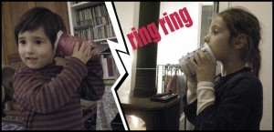

Dos envases de yogurt y un hilo de lana...¡y ya podéis hablar por teléfono! Si quieres escuchar algo el hilo tiene que estar tensado. Two yogurt cups connected by a cotton yarn create a telefon. To be able to talk the yarn has to be tensed. Zwei Jogurtbecher werden durch einen Baumwollfaden zum Telefon. Der Faden muss zum telefonieren nur gespannt sein.